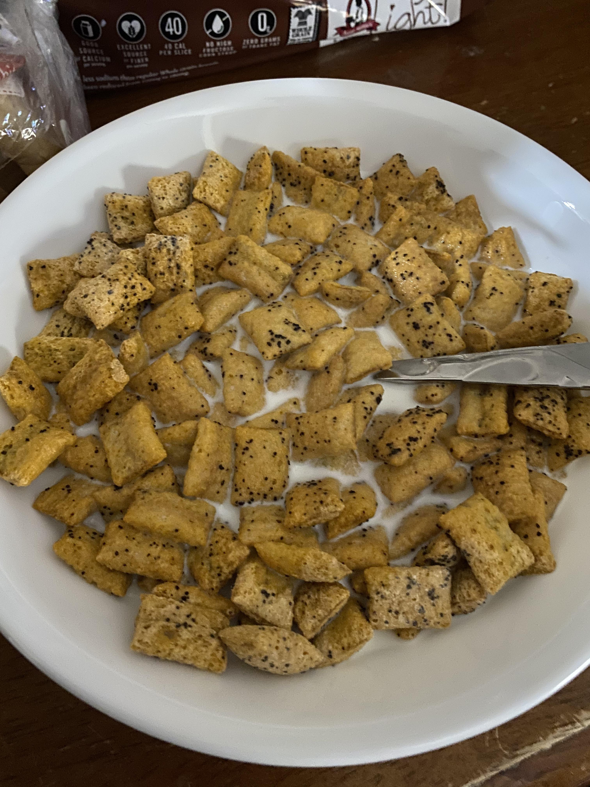

Cereal

Krave Cereal
In the above image, you can see a bowl of Krave cereal with whole milk. It its ready to be enjoyed as is. No other ingredient is needed but if another one is desired, it can be added
Ingredients
Steps
1. Acquire ingredients
2. Set bowl on table
3. Open Krave cereal box
4. Pour Krave cereal (amount to your liking) into bowl
5. Place Krave cereal back on table
6. Open milk
7. Grab milk container & pour into bowl (amount to your liking) filled with Krave cereal
8. Put milk container back on table
9. Grab spoon
10. Place spoon inside bowl of cereal
11. It's ready to eat, enjoy!
Home
Back to the top